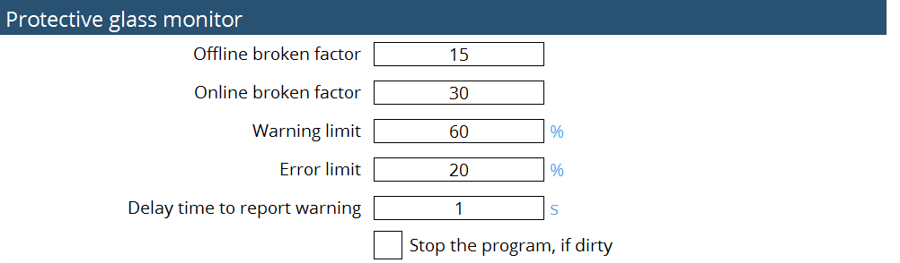

Védőüveg-felügyelet
Paraméterezés
A védőüveg-felügyelet olyan rendszer, amely a védőüveg állapotát figyeli. Megakadályozhatja rossz minőségű alkatrészek gyártását vagy akár a gép károsodását is.
Működését a következőképpen jellemezhetjük:
-
Ha a védőüveg minőségi értéke alacsonyabb, mint a vágás közbeni hibaszint: A gép leállítja a megmunkálást, a sugár kikapcsolódik és a kezelőfelület elején megjelenik egy ablak.
-
Ha az ablak Bezár gombjára kattint, akkor a gép folytatja az aktuális lemez vágását. A következő lemez megmunkálása előtt védőüveg-mérést végez. Ha a minőség még mindig a hibaszint alatt van, akkor az ablak ismét előugrik. A "Bezár" gombra kattintva a gép folytatja a megmunkálást és az ablak a lemez végén ismét megjelenik.
-
Ha az üveg kezdettől fogva szennyezett, akkor az első kontúrvágás után a gép leáll és védőüveg-mérést végez. Ha a minőség a hibaszint alatt van, előugrik egy ablak. A Bezár gombra kattintva a gép folytathatja az aktuális lemez vágását.
Offline és online mérés is lehetséges:
| Offline mérés | Online monitorozás | |
|---|---|---|
Méréstípus |
Rögzített mérési feltételek |
Helyszíni mérés |
Triggerek |
Relatív határérték a tiszta referenciaértékhez képest |
Relatív határérték a tiszta referenciaértékhez képest |
Hatás |
Eredmény százalékban |
Reakció a kontúr végén |
Cél |
Megakadályozza anyaghulladék keletkezését a gyártásnál |
Elindítja az offline mérést |
Offline mérés : Az offline mérés az üveg minőségének stabil körülmények közötti ellenőrzésére szolgál. Az offline mérés során három különböző szintű lézerteljesítmény kerül kibocsátásra meghatározott ideig ez jellemzően 500 msig. Az üvegről visszavert fényt minden egyes teljesítményszintnél megmérik, majd kiszámítják a standard visszaverődési fényerősséget és összehasonlítják egy referenciaértékkel, amelyet ugyanezzel a módszerrel határoztak meg. A számítás során egy offline törési együtthatót is figyelembe vesznek az üveg minőségének meghatározásához. Azonos visszaverődési fényerősségérték esetén a magasabb törési tényező jobb üvegminőséget jelez. Ezért csak akkor jelenik meg figyelmeztetés vagy hibaüzenet, ha az üveg nagyon szennyezett.
Online monitorozás : Az online mérés az üvegminőség vágás közbeni ellenőrzésére szolgál. Lézerteljesítmény kibocsátása esetén kiszámításra kerül a visszavert fény meghatározott idő alatti átlagértéke, majd erre az értékre a rendszer egy aluláteresztő szűrőt alkalmaz. Ezután az online törési tényezőt veszik figyelembe a végső üvegminőség meghatározásához. A kimeneti lézerteljesítmény instabil jellege és a vágott lemezről történő visszaverődés miatt az online törési tényező lényegesen magasabb, mint az offline.
A paraméterezés a beállítási oldalon történik :

Fényességmérés
A védőablak mérése fényességmérésen alapszik. Ha az állapot Tiszta, akkor a védőablak állapota jó a vágás folytatásához a jó vágási eredmények szempontjából. Ha az állapot Szennyezett, akkor a védőablak állapota rossz és a jó vágási eredmények elérése érdekében ajánlatos kicserélni azt.

A minőségérték százalékarányának függvényében tisztítsa meg vagy cserélje ki a védőüveget.
-
80%-90% → tiszta
-
< 80% → csere

A fenti bejegyzésekkel az X- és az Y-tengely a pozícionált érték felé mozog.

A program futása a felhasználói igénynek megfelelően követi a frekvencia és a terhelés adatait. A teljesítményparaméter előre meghatározott, és lépcsőzetesen 500 W, 1000 W, valamint 1500 W értékekre van beállítva.
A fókuszátmérő, a fókusztávolság és a tartózkodási idő is a felhasználói igényeknek megfelelően módosult. A beírt értékek a program futása közben figyelemmel kísérhetők. A megadott tartózkodási idő alatt a program szünetel, majd a beállított idő letelte után megszakad.
A mérési üzemmód offline és referenciaadatokkal rendelkezik. Az offline üzemmód kiválasztása esetén a felhasználó futtathatja a programot és ellenőrizheti a védőablak állapotát. A referencia kiválasztása esetén a felhasználó ellenőrizheti a minőség adatait és értékeit, valamint a linearitást és azokat a mentés opcióval el is lehet menteni. A referenciát általában akkor érdemes kiválasztani, amikor a védőablak új és ez jó eredményeket biztosít.
Futásakor a fényességmérési program futásakor naplózza az adatokat, amelyek a LumiMeasurelog.txt fájlban olvashatók a C:\ProgramData\Metamation{APPNAME}\Log\Currentyear\Currentmonth\Currentday elérési útvonalon vagy a felhasználói felületen.


A fenti számítás alapján a következő paraméterek kerülnek hozzáadásra az MK fájlhoz a felügyeleti funkció optimalizálása érdekében :
-
Offline törési tényező
-
Online törési tényező
-
Figyelmeztetési határérték százalékban
-
Hibahatár százalékban
-
Figyelmeztetés jelentésének késleltetési ideje másodpercben
